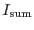
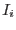
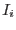
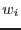

Suppose we have two images of the same part of the sky, taken by the same instrument, in the same energy band and containing the same fraction of background contribution. Clearly, summing these together yields an increase in the sensitivity of detection of point sources. In fact the summed image will be indistinguishable from a single image taken with an exposure duration equal to the sum of the two individual durations.
The situation is otherwise if one of the pair of images contains a much lower ratio of source-to-background than the other. In this case, summing the images can actually lead to a decrease in detection sensitivity: in the limiting case it is better just to keep the image with the higher source-to-background and throw the other away.
These two scenarios may be thought of as extreme cases of the more general procedure of forming a weighted sum of the two images. Indeed we may expect that, for the general case where an image  is formed as the weighted sum of  contributory images ,
contributory images ,
a set of values of the weights  exists which maximizes the source-detection sensitivity. It is the task of imweightadd to estimate these optimum weights for the given input images and to apply them to calculate .
Before working out an algorithm for calculating the optimum weights it is necessary to say quantitatively what we mean by `source detection' and `detection sensitivity.'